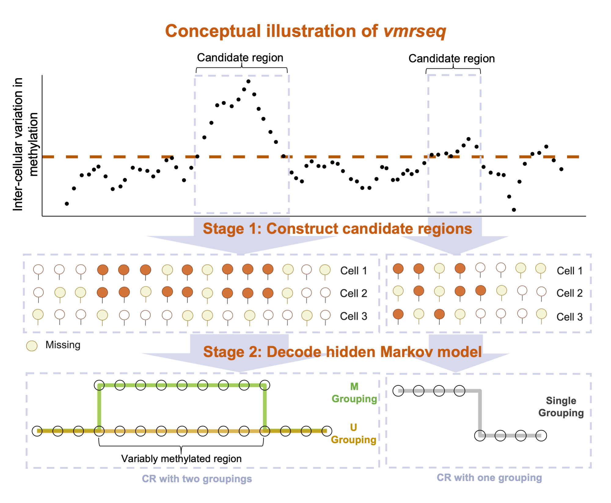

The R package vmrseq is a novel computational tool developed for pinpointing variably methylated regions (VMRs) in scBS-seq data without prior knowledge on size or location. High-throughput single-cell measurements of DNA methylation allows studying inter-cellular epigenetic heterogeneity, but this task faces the challenges of sparsity and noise. vmrseq overcomes these challenges and identifies variably methylated regions accurately and robustly.

Installation
You can install the development version of vmrseq in R from GitHub with:
# install.packages("devtools")
devtools::install_github("nshen7/vmrseq")Online Vignette
- An online vignette of ‘Get Started’ on the
vmrseqpackage can be found at https://rpubs.com/nshen7/vmrseq-vignette. - An example workflow on scBS-seq data analysis using
vmrseqcan be found at https://github.com/nshen7/vmrseq-workflow-vignette.
Docker Image
We provide a Docker image for robust setup and use of this package. The Docker image includes all necessary dependencies for the package and vignettes. To pull the Docker image from Docker Hub, use the following command in bash:
Citation
Ning Shen and Keegan Korthauer. 2023. “Vmrseq: Probabilistic Modeling of Single-Cell Methylation Heterogeneity.” bioRxiv. https://doi.org/10.1101/2023.11.20.567911.